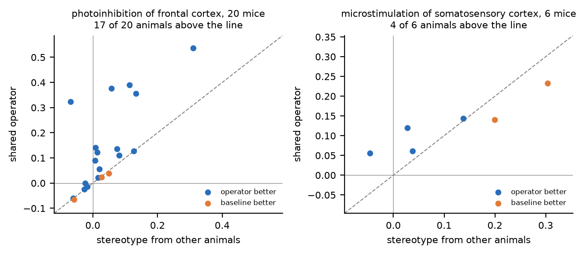
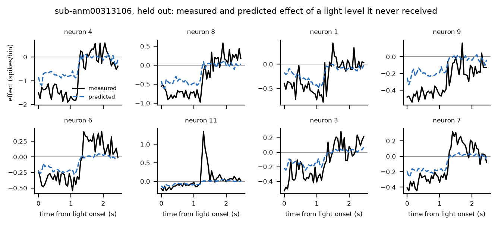
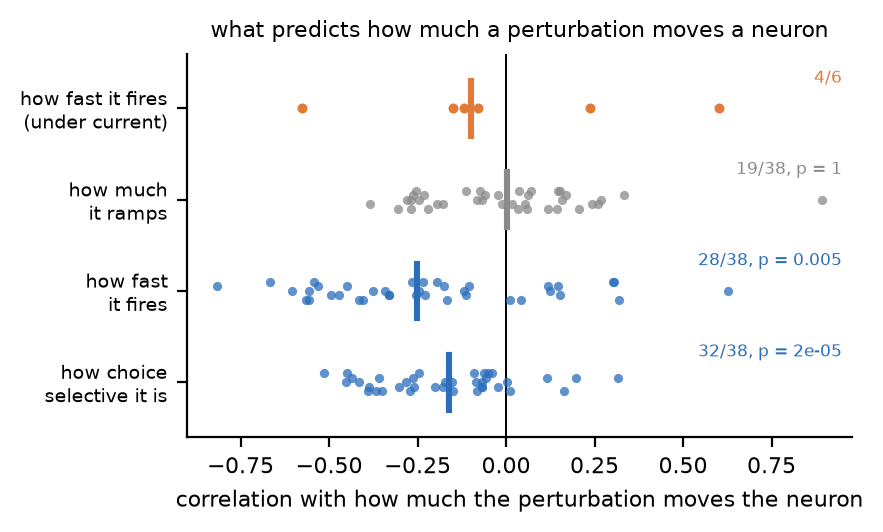
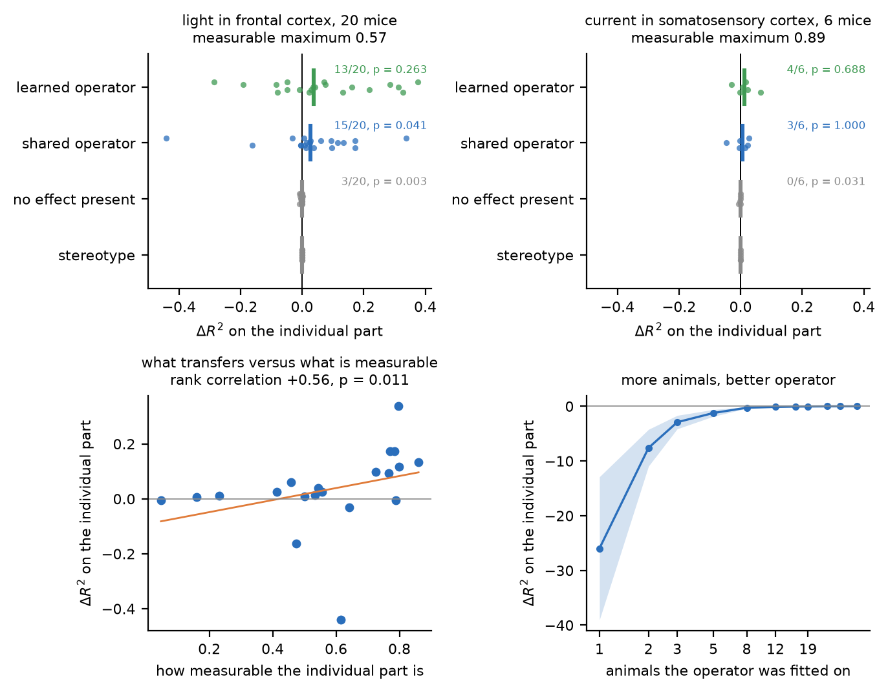
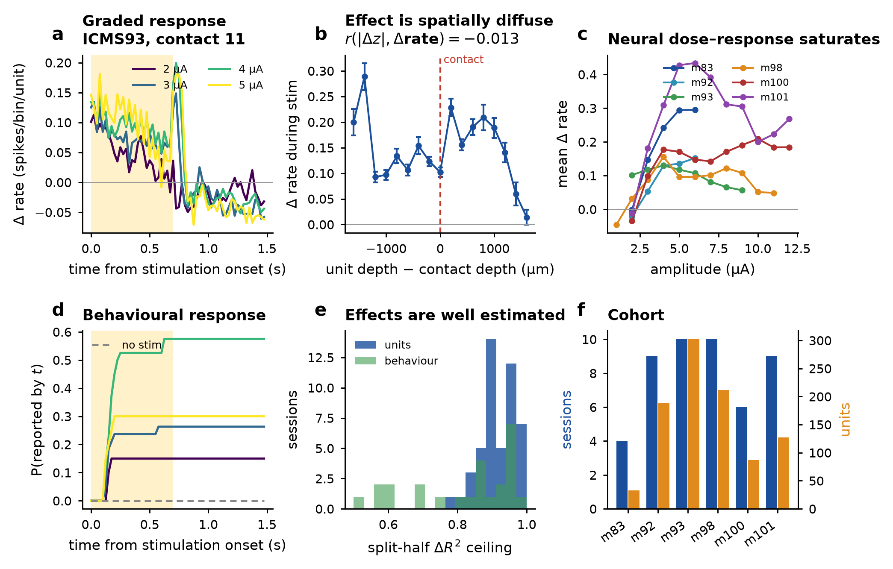
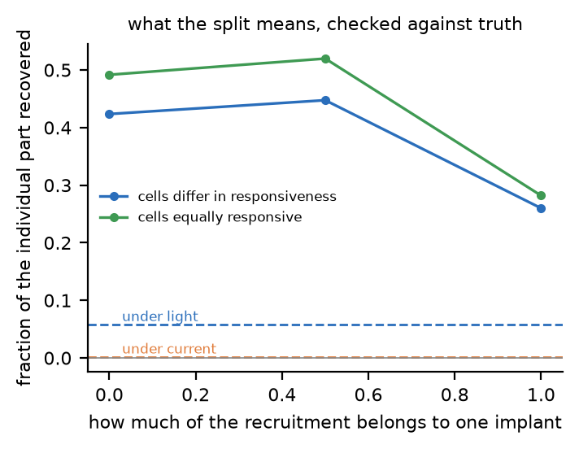
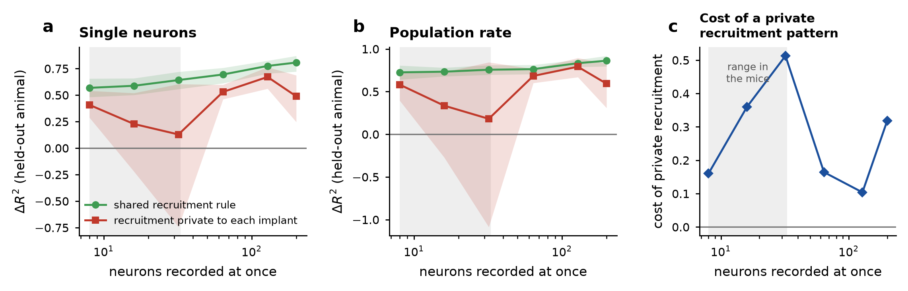
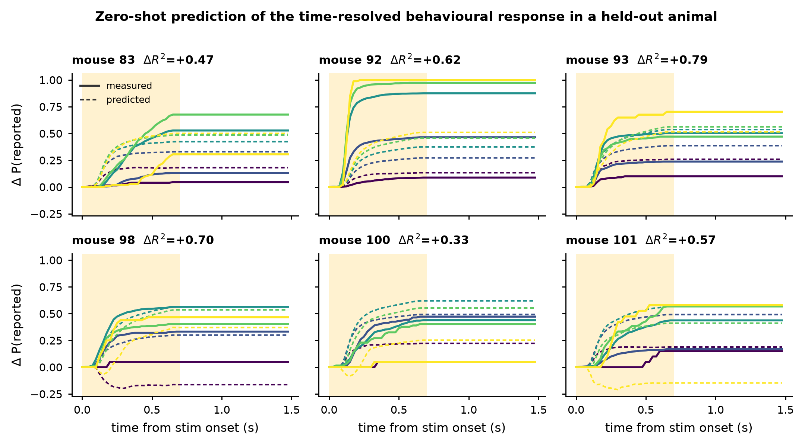

Show a model several animals being perturbed, then show it a new animal doing nothing in particular. From that ordinary activity alone, what can it say about a perturbation the animal has never received?
We ran that test on two cohorts and got two different answers. The difference between them is the result.


The operator transfers, so something about a neuron's ordinary activity must say how a perturbation will move it, and the same something must hold in every animal. We asked what it is without fitting anything: inside each recording, correlate the individual part of each neuron's response with properties read off its control trials.

The cohort is three separate releases collected years apart, and the selectivity result replicates independently in each half of it: 17 of the first release's 19 animals (p = 7×10−4) and 15 of the later releases' 19 (p = 0.019).
The light takes most from the cells that have most, by the same rule in nearly every animal. Under current, no such rule exists, and that is exactly why nothing individual transfers there.
A perturbation moves a population in a broadly stereotyped way, so a model can look good while handing every neuron the same answer. So we split the measured effect into the part the population shares and the part specific to one neuron, and scored models on the second part alone.
Delta_n(t) = mean over neurons of Delta(t) + delta_n(t)A stereotype borrowed from other animals scores exactly zero on
delta, not approximately zero, because its prediction does not vary across
neurons. Anything above zero is prediction of individual structure in an animal whose
perturbation trials were never read.
On the whole response, under light, the model wins. It scores +0.134 against +0.039 for the average of the other mice, a paired difference of +0.095 at p = 3.5×10−4 over 20 animals, and on the best measured animals it does best in it reaches +0.36 to +0.54, against a stereotype managing +0.06 to +0.31. No single animal carries it: dropping each in turn, the weakest version of the test is p = 7.1×10−4. It replicates on the full 39-mouse cohort, which adds two releases whose recordings are much smaller: +0.086 against +0.020, better in 26 of 39, p = 0.013.
On the individual part, it transfers in 29 of 39 mice (p = 0.003), against 10 of 39 when the same analysis is run with no effect present.
How much transfers is proportional to how well the animal was measured: rank correlation +0.44 (p = 0.005) with the noise ceiling, fixed by trial counts before any model is fitted. Sorted into thirds by that ceiling the gradient is monotone: −0.115 in the worst measured third, −0.017 in the middle, +0.090 in the best.
Averaged over all 39, including nineteen whose recordings cannot resolve the individual part at all, the mean is not different from zero. We say that plainly: what varies is the amount, not the direction. Where it can be resolved the amount is worth having: in the first cohort it is above zero in 15 of 20 mice (p = 0.041), and in the better measured half of it the operator recovers 22% of everything individual that is measurable, in 9 of 10 animals (p = 0.021).
Under current, it does not, and this is not a measurement problem. The measurable maximum there is 0.90, higher than in the light cohort, so the individual part is sitting there clearly resolved and no rule we fit reaches it.

Fitting the shared operator on random subsets of the training animals gives an orderly curve. One animal is not merely useless but far worse than predicting nothing, because a single animal's idiosyncrasies get mistaken for a rule and then applied confidently to somebody else. Five animals are still deeply negative. The average across animals only reaches zero at 38, tracking the log of the cohort size at r = +0.77 and still rising. That average is a mean of ratios and one badly measured animal holds it down, so the number to read is how many animals the operator helps in: at 38 it is above zero in 29 of 39 mice (p = 0.0034), and at five animals in fewer than half.
A study with five animals would not have found this and would have reported that nothing transfers.
The behavioural consequence of the light transfers well: the average of the other mice predicts a held-out mouse's change in choice with a median ΔR² of 0.51. Adding what the model knows about that mouse's own neurons does not improve it at all.
That is the thesis from the other side. Behaviour is a population-level readout, and population-level effects are stereotyped enough across animals that the individual adds nothing. Predicting an animal's change of mind is therefore no evidence that a model has captured that animal.
The rule measured above says the failure should be about amplitude: under current, nothing a neuron does on its own tells you how far the stimulus will move it. Taking that cohort apart confirms it.
The shared rule actually gets each neuron's response shape right, meaning when it fires, how it ramps and decays, and how it scales with current. The only thing it gets wrong is how strongly each neuron responds, which is one number per cell.
Hand the model that one number per cell and change nothing else, and the neural score jumps from 0.035 to 0.422, in every one of the six mice. A single scalar cannot invent structure in time or across currents, because each neuron's predicted time course is already fixed by the shared rule. So the rule was right and the amplitude was wrong.
| what the model is given for the held-out mouse | free numbers | score | mice above zero |
|---|---|---|---|
| nothing (the honest prediction) | 0 | +0.035 | 3/6 |
| one amplitude per neuron | N | +0.422 | 6/6 |
| an amplitude and an offset per neuron | 2N | +0.511 | 6/6 |
That amplitude turned out to be essentially unguessable. We tried predicting it from everything we could measure without stimulating, including each neuron's depth, its distance from the electrode, its firing statistics and its spontaneous coupling to the cells near the contact. Across all 949 neurons the correlation was 0.174, and the improvement did not survive a test over animals.
The reason is that low current stimulation does not light up a neat sphere of nearby cells. It grabs a sparse, scattered set that depends on where that particular electrode happened to land in that particular brain. Pooled over every session, how much a neuron responds is essentially unrelated to how far it sits from the contact (r = −0.013). There is no species level rule to learn at that resolution.


We built a cortex where we control the thing we think matters. When the electrode drives neurons by a rule shared across animals, single neuron transfer works at every population size we tried, and it improves very regularly as more neurons are recorded, with a correlation of 0.99 between the score and the log of the population size. When the electrode instead drives a scattered set private to each implant, the average score falls from 0.68 to 0.41, the trend with population size becomes erratic, and the spread across animals roughly triples.
So private recruitment does clearly damage single neuron transfer and makes it much less reliable from animal to animal. It does not abolish it in simulation, which means it is one contributing cause in the real mice rather than the whole story. Small simultaneously recorded populations are likely another. Our sessions have between 8 and 33 neurons, at the bottom of the range we simulated.

The claim is about animals. Several sessions from one mouse are still one mouse, so every headline number here is inferred at the animal level, with a bootstrap that resamples animals and an exact test over them. With six animals the smallest p value such a test can return is 0.031, reached when all six fall on the same side; with twenty it is 1.9×10−6.
A per animal score divides by that animal's own effect energy, so an animal whose effect is barely there can return a wildly negative number and drag a mean around with it. The headline test is therefore an exact sign test over animals, which asks whether the operator helps in an animal more often than not and cannot be moved by one extreme value.
Averaging the other five mice predicts the sixth about as well as our dynamical model does. Adding the new mouse's resting activity made the behavioural prediction worse rather than better. The behavioural consequence of stimulating this part of cortex is conserved enough across individuals that it does not need a model of the individual, which is itself worth knowing.

The fraction of the individual part that transfers under light is a few per cent of what is measurable. It is not zero and it is not most of it, and we cannot yet say whether the rest is genuinely private or simply beyond the operator we wrote.
Our simulated cortex never drives transfer of the individual part all the way to zero, and the microstimulation cohort sits below its worst case. So private recruitment is part of the story there and not all of it. The missing piece is a second mechanism: under light a neuron's ongoing rate says how much the perturbation will move it, and under current it does not. That is checkable directly, by measuring responsiveness and ongoing rate in the same cells under both kinds of perturbation.
git clone https://github.com/aaravsinhaofficial/cross-animal-perturbation-transfer
cd cross-animal-perturbation-transfer
make env # python 3.12 venv and dependencies
make cache # download both dandisets, build tensors, run the audit
make analysis # the results table, with animal-level statistics
make operator # leave-one-animal-out training of the shared operator
make individual # the split into shared and individual parts
make cortex # the simulated cortex sweeps
make paper # figures, numbers and the PDF